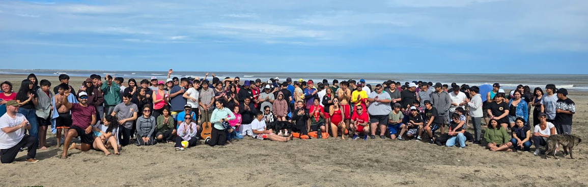
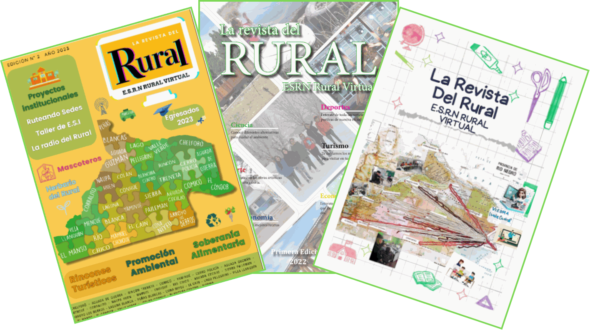

Presentación
Presentación
Revista digital de la ESRN Rural Virtual
Somos la ESRN RURAL VIRTUAL
Una propuesta educativa presencial-virtual destinada a egresados de Educación Primaria que residen en parajes rurales que no disponen de una oferta de Educación Secundaria tradicional. Actualmente nuestra escuela cuenta con veintiséis sedes en toda la provincia, a la que asisten diariamente más de cuatrocientos estudiantes.

¿Dónde estamos?
Cada punto verde de este mapa de la Provincia de Río Negro indica una localidad o paraje donde funciona una sede de la ESRN Rural Virtual.
La Revista del Rural
Presentamos la Revista del Rural, una propuesta pedagógica que pretende sumar un nuevo medio de expresión para toda nuestra extensa comunidad educativa.
La revista se encuentra organizada en diferentes secciones. Las mismas fueron diseñadas y elaboradas por las y los estudiantes en instancias de trabajo colaborativo, junto con el acompañamiento docente. A lo largo de la revista podrán encontrar historias, noticias, arte, además de la divulgación de producciones elaboradas durante el año en los distintos espacios curriculares.
